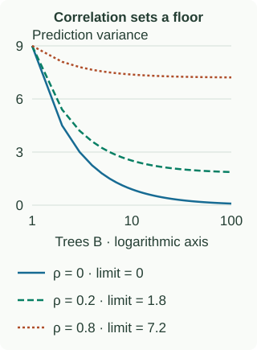

Bootstrap Aggregation: Sampling, Averaging & Variance
From the introduction: averaging helps only when the learners have something different to contribute. Here we create those differences by resampling rows. By the end, you should be able to draw a resample, combine predictions, and explain the assumptions behind the variance formula.
Why deep trees are a useful starting point
Suppose two candidate root splits have almost equal training cost. Removing one observation can switch the winner. Every later split is then fit to a different group of rows, so a small data change can produce a large prediction change. This sensitivity is one reason an individual deep tree often has high variance.
Bagging stands for bootstrap aggregating. It deliberately perturbs the training data many times, fits the same kind of learner to each version, and averages their predictions. It can also wrap models other than trees. A stable learner whose predictions hardly change under resampling has less variation for averaging to remove.
Make one bootstrap sample
From row IDs [1, 2, 3, 4, 5], draw five times with replacement. A possible sample is [1, 1, 3, 5, 5]. Rows 1 and 5 count twice in training; rows 2 and 4 are omitted. Repeat the sampling for each tree.
What “distinct rows” means
Distinct rows means the different row IDs represented in the sample. A row drawn twice still contributes one ID to that count. “How many different IDs appeared?” and “How many IDs appeared exactly once?” are different questions.
See the difference with just two rows
Take original rows A and B, and make two independent draws with replacement. These four ordered samples are equally likely:
| Sample | Different IDs present | Distinct count |
|---|---|---|
| A, A | A | 1 |
| A, B | A and B | 2 |
| B, A | A and B | 2 |
| B, B | B | 1 |
Focus on A. It is absent only in [B, B], with probability $1/4$. In the other three samples, A is present. Therefore $1-1/4=3/4$ is the probability that A appears at least once. This includes [A, A].
A appears exactly once only in [A, B] and [B, A], with probability $2/4$. Using that probability would wrongly exclude A from the distinct count in [A, A]. That sample has one different row ID, not zero.
A therefore contributes 1 to the distinct count in three of the four samples: an average contribution of $3/4$. B also contributes $3/4$ on average. Adding their contributions gives $3/4+3/4=1.5$ distinct rows on average. Check the last column directly: $(1+2+2+1)/4=1.5$. This is an average count, not a probability.
The general formula
Now take $n$ original rows and make $m$ independent uniform draws with replacement. One draw skips a particular row with probability $1-1/n$. To miss that row on all $m$ draws, multiply this probability $m$ times: $(1-1/n)^m$.
Subtracting from 1 gives its probability of appearing one or more times: $1-(1-1/n)^m$. Whenever it appears, it contributes one distinct ID, however many times it was drawn. Each of the $n$ rows has this same average contribution. Adding them gives the expected number of distinct rows:
With the usual $m=n$ and large $n$, about 63.2% of the original row IDs appear on average. The omitted rows can appear in another tree’s sample.
Repeated draws still count during training: a tree trained on [A, A] sees A twice. Counting distinct IDs is only a way to measure how much of the original dataset the sample covers; it does not change the sample.
Specify how predictions combine
Regression predictions 2, 4, and 6 average to 4. Classification needs a convention: hard-label majority vote and average class probability can disagree. Probabilities [0.51, 0.51, 0.01] give two positive votes, but their average is only 0.343.
Many trees help only with the part they do not share
Hold one input fixed and imagine repeatedly collecting training data and fitting the ensemble. Each tree’s prediction can change across those refits. Prediction variance measures that spread around the prediction’s own mean.
Where the formula comes from
Let $f_1,\ldots,f_B$ be the $B$ tree predictions. For this illustration, assume each has variance $\sigma^2$ and each pair has correlation $\rho$.
1. Separate the sum from its average. Call the sum $S=f_1+\cdots+f_B$. The ensemble prediction is the average $\bar f=S/B$. These are different quantities. Dividing $S$ by $B$ divides its deviation from its mean by $B$, and its squared deviation by $B^2$. Therefore:
Adding predictions alone introduces no denominator. The $B^2$ appears because we subsequently divide their sum by $B$. Also, the “average squared deviation” in the definition of variance is an average across repeated refits; it is not an instruction to divide predictions by the number of trees.
2. Understand the covariance term. On one refit, let $a$ and $b$ be two trees’ deviations from their respective mean predictions. Same-sign deviations give $ab>0$: both predictions moved up, or both moved down. Opposite-sign deviations give $ab<0$. Covariance is the average of these products across refits, so positive covariance means same-direction products outweigh opposite-direction ones.
Correlation expresses this covariance relative to the predictions’ scales. Its denominator is the product of their standard deviations. Since both variances are $\sigma^2$, both standard deviations are $\sigma$. Rearranging the definition gives:
For example, variance 9 means standard deviation 3. A pair with correlation 0.2 therefore has covariance $0.2\times3\times3=1.8$. This covariance describes how the two predictions vary together across refits.
3. Find the variance of the sum. A deviation means “this refit’s prediction minus its mean prediction across refits.” Call the two mean predictions $\mu_1$ and $\mu_2$. The individual deviations are therefore $a=f_1-\mu_1$ and $b=f_2-\mu_2$.
The sum predicts $f_1+f_2$, and its mean is $\mu_1+\mu_2$: adding predictions on each refit and then taking their mean gives the same result as adding the two individual means. This holds even when the predictions are correlated. Subtract that mean from the sum to get its deviation:
Now square the sum’s deviation: $(a+b)^2=a^2+b^2+2ab$. Taking the average across refits turns $a^2$ and $b^2$ into the individual variances, and $ab$ into covariance:
For this illustration, assume each tree has variance 9, hence standard deviation 3, and their correlation is 0.2. Their covariance is therefore $0.2\times3\times3=1.8$. The sum has variance $9+9+2(1.8)=21.6$. The average $(f_1+f_2)/2$ has variance $21.6/2^2=5.4$. Thus the sum’s variance can exceed either tree’s variance while the average’s variance is smaller.
4. Count the terms for $B$ trees. The same square expansion gives one squared deviation per tree and two products per pair. For three trees, for example:
There are three variance terms and three pairs: $(1,2)$, $(1,3)$, and $(2,3)$. Each pair appears twice in the multiplication: for example, $ab$ and $ba$ combine into $2ab$. For $B$ trees:
- Individual terms: $B$ squared deviations become $B$ variances, each $\sigma^2$, totaling $B\sigma^2$.
- Pair terms: $B(B-1)/2$ distinct pairs. Choosing the first and second tree gives $B(B-1)$ choices, but counts each pair in both orders. Each pair contributes $2\rho\sigma^2$ to the variance of the sum. Multiplying the pair count by that contribution cancels the pair-count denominator 2 with the cross-term factor 2, leaving $B(B-1)\rho\sigma^2$.
For three trees, this is $3\sigma^2+6\rho\sigma^2$: three individual variances plus three doubled covariances. This is still the variance of the sum.
5. Convert the sum into the ensemble average. Now apply the $1/B^2$ factor from step 1:
The last step uses $(B-1)/B=1-1/B$. If $\rho=0$, the sum’s variance is $B\sigma^2$ and the average’s variance is $\sigma^2/B$. If $\rho=1$, the sum’s variance is $B^2\sigma^2$ and the average’s variance stays at $\sigma^2$.
With 100 trees, variance 9, and correlation 0.2, the average has variance 9 × (0.2 + 0.8/100) = 1.872. As more trees are added under these assumptions, it approaches a floor of 1.8.

Which part of prediction error is being reduced?
Variance is not total error. For squared loss at a fixed input, imagine repeating the collection of a training dataset. If the true mean response is $f^*(x)$ and a fitted prediction is $\hat f(x)$, its expected test error decomposes as
The first term is irreducible response noise, the second is squared bias, and the third is prediction variance. This identity assumes the test response noise is independent of training and has conditional mean zero. Averaging targets the third term. It cannot recover missing predictors or erase a systematic error that all trees share.
If every predictor has the same expected value, their average has that expected value too. Bagging can nevertheless change bias relative to a tree fit once on the full original data, because training on bootstrap samples is a different fitting procedure. “Bagging only changes variance” is a useful motivation, not a universal theorem about every learner.
Why can bootstrap draws be independent while predictions remain correlated?
Condition on one fixed training dataset: independently drawn resamples and random seeds can produce independent random fits. Across repeated original datasets, all trees share whichever dataset was collected. That common source of fluctuation remains when the number of trees becomes large. Specify what randomness you are averaging over before claiming independence. The equal-correlation illustration above describes repeated-fit prediction variability, not a measurement obtained by correlating arbitrary feature columns.
Write the full training and prediction procedure
fit_bagging(X, y, B, rng):
models = []
for b in range(B):
ids = rng.draw_with_replacement(0, len(y), count=len(y))
model = new_base_learner()
model.fit(X[ids], y[ids]) # repeated indices remain repeated
models.append(model)
return models
predict_regression(models, x):
return mean(model.predict(x) for model in models)Use a fresh learner object per iteration. Advance a seeded random generator or derive distinct seeds for each tree; resetting the same generator to the same seed inside the loop can reproduce the same sample every time. Fix the overall seed for reproducibility, and check stability across seeds separately from tuning on validation data.
For classification, choose the aggregation convention before evaluating. If each tree returns a probability vector over classes, average corresponding class probabilities and take the largest for the label. Align class order, especially when a bootstrap omits a rare class. Hard votes are also possible, but the earlier example shows they are not interchangeable with probability averaging.
The remaining problem: trees can agree too much
We now know why repeated rows create alternative trees and why more trees eventually hit a correlation floor. If one strong feature dominates almost every resample, the trees may still choose very similar splits. The next chapter changes which features a split is allowed to consider, creating an additional source of diversity.
Continue to out-of-bag evaluation for this part of the expanded curriculum.
Continue to the fitted OOB calculation for this part of the expanded curriculum.
Continue to random forests for this part of the expanded curriculum.
Continue to forest tuning for this part of the expanded curriculum.
Continue to prediction cost and limitations for this part of the expanded curriculum.
Sources and further reading
- Breiman: Bagging Predictors — The original bootstrap-aggregation motivation.
- Breiman: Random Forests — Strength, correlation, and forest construction.